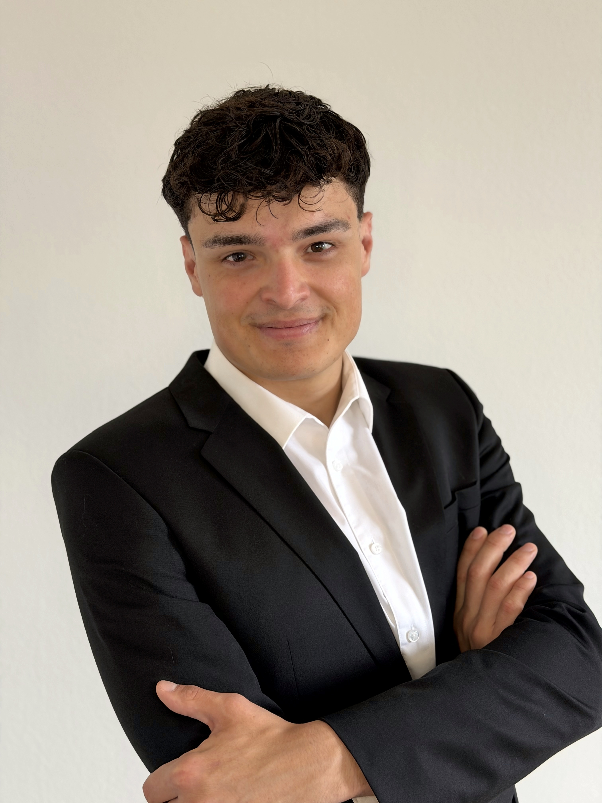
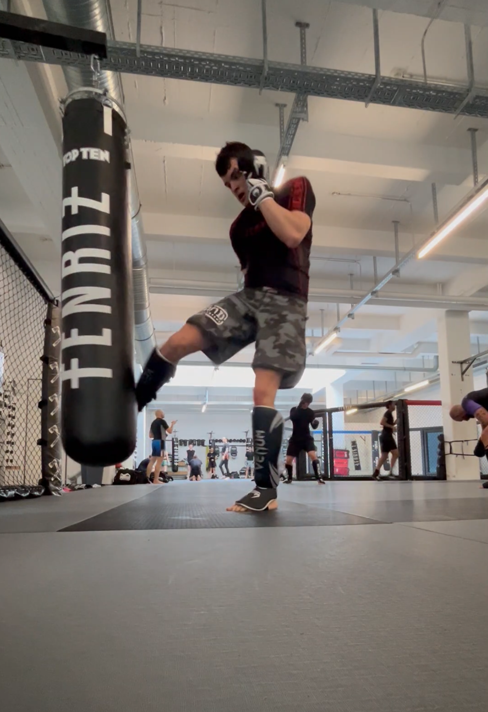
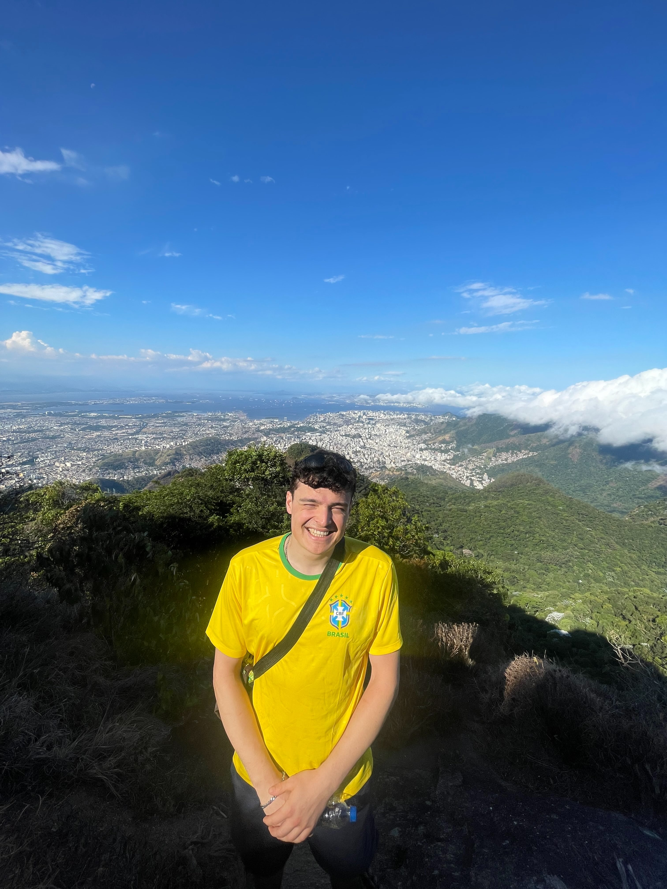

Currently in consulting, and stepping into B2B sales. What I enjoy most is the relationship and the close.

I am in consulting today, and I do it well. What I enjoy most, though, lives at the edge of the work. It is the conversation, the persuasion, the moment when someone decides to say yes. That is where I want to spend my time.
This move has nothing to do with chasing a trendy industry. It comes from a simple realisation about how I work best. I am at my most useful around people, reading a room, building trust quickly, keeping the energy up when a deal gets complicated. In advisory, I am always one step away from the outcome, and I would much rather be the one carrying the relationship all the way to the close.
My background is in sustainability and ESG advisory, in a broad sense rather than a very technical one. I have touched the regulatory side, the commercial side, the data, and the stakeholders. It is not the sector I am aiming for next, but it says something real about me. I am genuinely purpose-driven, and I connect deeply with a company's mission when the work actually means something.
I have been deliberate about this search. I have a clear sense of what I am good at, and of the kind of role that actually uses it. I am open across B2B sales, because what matters to me is the type of work, much more than the label on the door.
And for a bit of context, I have trained combat sports for years, judo, MMA and boxing. That is where I learned to stay calm when things get hard.
At Accenture, I worked inside a €2B+ government subsidy negotiation for one of Europe's largest industrial operators. I owned a full workstream, and the outputs fed straight into ministerial-level discussions. I learned to hold my own with government, industrial and financial counterparts in the same room.
I co-developed client proposals worth more than €1M. The real work was understanding what each decision-maker truly cared about, and shaping the offer around that. I have lived the full cycle, from the first pitch all the way to the close.
I coordinated six or more departments under tight commercial and regulatory deadlines, keeping everyone aligned and the work moving. Complexity tends to be where I am at my best.
I care more about the shape of the work than the industry on the door. The roles that fit me best put me close to people and close to the outcome.
A quick read on how I am wired, drawn from my CliftonStrengths profile.
I get a lot of satisfaction from seeing other people grow, and from helping them get there.
I bring energy into a room and I keep morale up, even when things get tense.
I really enjoy meeting new people and winning them over. Breaking the ice comes naturally to me.
I trust my own judgment, and I am comfortable taking the lead and owning my decisions.
I love new ideas, and connecting things that seem unrelated at first.
I sense how people are feeling, and I adjust to it.
The quickest way to get a sense of how I talk and how I think.
He is a true team player, fostering a productive working relationship. He consistently showed a proactive mindset, tackling challenges with a positive attitude.
Working with Rayan was genuinely valuable. He brought real initiative to the project, worked very independently, and always acted thoughtfully. He learns fast, questions things critically, and thinks ahead.
Rayan's reliability and dedication are exceptional. He consistently goes the extra mile and provides unwavering support to the team.
Outside of work, I train combat sports, judo, MMA and boxing. Years on the mat taught me to stay calm under pressure, and to keep showing up when things get hard.
I am curious by nature, and it pulls me in a lot of directions. I like picking up languages, understanding how different markets and cultures actually work, and spending time between Europe and Brazil, which is a real second home for me.

-->SPORT PHOTO
-->LIFESTYLE PHOTOReal reach across European and Brazilian markets.
I care far more about the right next move than a specific city. I am open across Europe, on-site or remote, and I treat that flexibility as a real asset.
Always happy to have a conversation about the right next move.